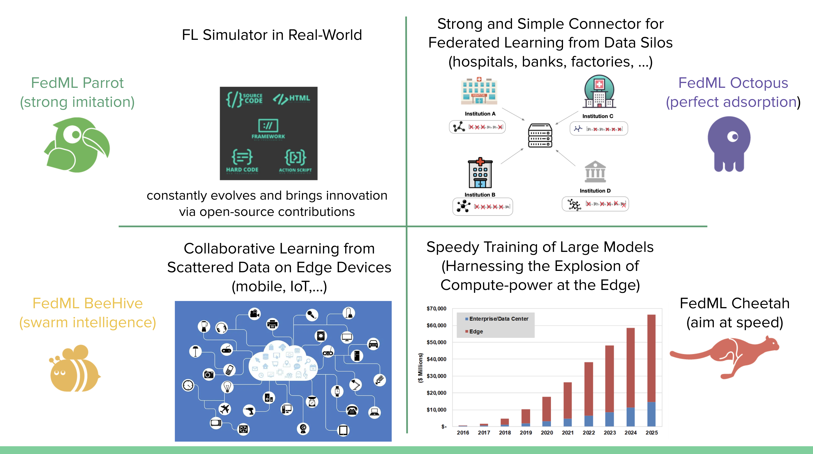

Welcome to FedML¶
Thank you for coming to FedML. This documentation provides all you need to know about using the FedML platform.
{kind=link}
Why FedML?¶
FedML, Inc. (https://fedml.ai) is to help people or organizations have AI capability from data anywhere at any scale. FedML stands for “Fundamental Ecosystem Development/Design for Machine Learning” in a broad scope, and “Federated Machine Learning” in a specific scope. At the current stage, FedML is developing and maintaining a machine learning platform that enables zero-code, lightweight, cross-platform, and provably secure federated learning and analytics. It enables machine learning from decentralized data at various users/silos/edge nodes, without the need to centralize any data to the cloud, hence providing maximum privacy and efficiency. It consists of a lightweight and cross-platform Edge AI SDK that is deployable over edge GPUs, smartphones, and IoT devices. Furthermore, it also provides a user-friendly MLOps platform to simplify decentralized machine learning and real-world deployment. FedML supports vertical solutions across a broad range of industries (healthcare, finance, insurance, smart cities, IoT, etc.) and applications (computer vision, natural language processing, data mining, and time-series forecasting). Its core technology is backed by more than 3 years of cutting-edge research of its co-founders.
Outline¶
This documentation is organized in the following sections:
Overview
- Get Started
- Installing FedML
- FedML Source Code Repository
- Install with pip
- Install FedML with Anaconda
- Install FedML from Debugging and Editable Mode
- Install FedML from Source
- Run FedML in Docker (Recommended)
- Guidance for Windows Users
- Guidance for Raspberry Pi Users
- Guidance for NVIDIA Jetson Devices
- Test if the installation succeeded
- Install FedML Android SDK/APP
- Troubleshooting
- Mission
- Technology Overview
- Application Ecosystem
- Open Source Code Architecture
- FedML MLOps Video Tutorial
- FedML FAQ
FedML MLOps - Landing FedML into Reality
- FedML MLOps Video Tutorial
- FedML MLOps User Guide
- How Does FedML MLOps Platform Work?
- Local Development and Building MLOps Packages
- 1. Create Application and Upload Local Packages
- 2. Install FedML Agent: fedml login $account_id
- 3. Invite Collaborators, Create a Group and a Project
- 4. Start Run (Training) via Automated Deployment and Scaling
- 5. Experimental Tracking via Simplified Project Management
- FedML MLOps CLI and API Reference
FedML Parrot - Simulating the Real World
FedML Octopus - Simple Connector for Data Silos
FedML BeeHive - Collaborative Learning on Smartphones/IoTs
FedML Cheetah - Speedy Training of Large Models
Benchmarks for FedNLP, FedCV, FedGraphNN and FedIoT
Careers¶
FedML is hiring researchers, engineers, product managers, and related interns. If you are interested, Please apply at https://fedml.ai/careers